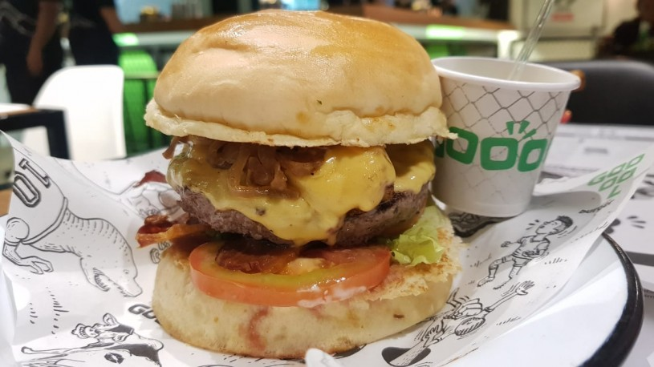

Hamburger

Ingredients
- 1 pound ground beef
- .5 cup shredded Cheddar cheese
- 2 tablespoons prepared horseradish
- .5 teaspoon salt
- .5 teaspoon pepper
- .5 teaspoon garlic powder
- .5 cup real bacon bits
- 4 hamburger buns
Directions
- Preheat grill for high heat.
- In a large bowl, mix together the ground beef, Cheddar
cheese, horseradish, salt, pepper, garlic powder, and bacon
bits using your hands. Shape the mixture into 4 hamburger
patties.
- Lightly oil the grill grate. Place hamburger patties on
the grill, and cook for 5 minutes per side, or until well
done. Serve on buns.